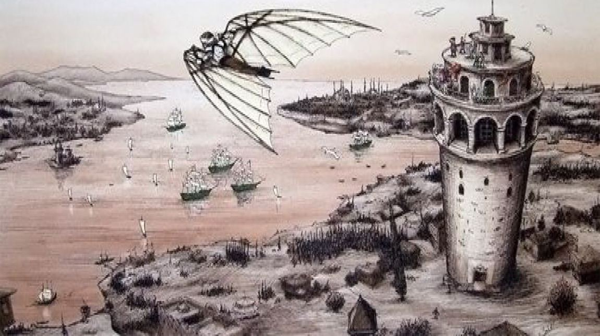

Hezârfen Ahmed Çelebi, pionierul zborului
Povestea lui Hezarfen Ahmed Çelebi, inventatorul otoman considerat primul om care a realizat un zbor susținut. O reușită remarcabilă, dar un nume aproape uitat astăzi.

Istoria este plină de inventatori ale căror nume au fost uitate sau sunt necunoscute pentru prea multă lume. Unul dintre acești inventatori este Hezarfen Ahmed Çelebi, creditat de istorici drept primul om care a reușit un zbor susținut cu ajutorul unor aripi confecționate chiar de el.El a fost un om de știință, scriitor și inventator din secolul al XVII-lea, cunoscut în special datorită acestui zbor. Astăzi, numele său este purtat de unul dintre aeroporturile din Istanbul.Hezarfen a reușit această performanță, considerată incredibilă la acea vreme, în anul 1632, în Istanbul, în timpul domniei sultanului Murad al IV-lea. A zburat de pe Turnul Galata pe o distanță de aproximativ trei kilometri.
În momentul zborului, sultanul se afla în locuința lui Sinan Pașa, de unde a putut urmări întreaga demonstrație. Impresionat de ceea ce a reușit Hezarfen, acesta l-a răsplătit cu un sac plin cu monede de aur.Evliya Çelebi, principala sursă contemporană despre inventator, a consemnat și un citat atribuit sultanului: "Omul acesta este uluitor. Este capabil să facă tot ce își dorește. Nu este bine să ai pe lângă tine astfel de oameni."Sultanul și-a tinut cuvântul și l-a exilat în Algeria, posibil deoarece se simțea intimidat de el. De asemenea, mulți dintre cei care l-au văzut zburând au considerat că evenimentul reprezenta un semn divin, iar unii l-au interpretat într-un mod negativ, crezând că vestește sfârșitul lumii.Hezarfen și-a petrecut restul vieții în Algeria, însă nu a mai trăit mult timp. A murit în anul 1640, la vârsta de aproximativ 31 de ani.
Deși astăzi poate privim cu oarecare aroganță reușita sa, pentru că trăim într-o lume complet diferită, trebuie să înțelegem că invenția lui, realizată după ce a studiat modul în care zboară păsările, a reprezentat un pas important în evoluția ideilor care au dus, în cele din urmă, la apariția avioanelor.Este greu să ne imaginăm în prezent o lume fără avioane, în care pentru a ajunge pe un alt continent ar trebui să călătorești neapărat cu vaporul. La fel de greu este să ne imaginăm cum ar fi arătat războaiele moderne, precum Al Doilea Război Mondial, fără avioane de luptă.Și totuși, în afara Turciei, foarte puțini oameni îi cunosc numele.